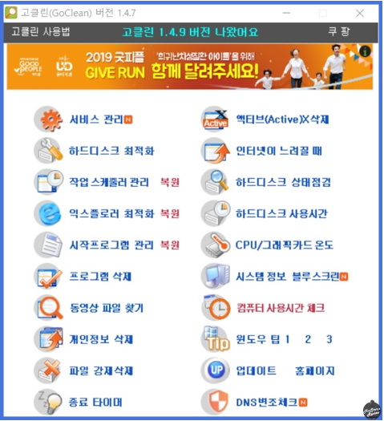
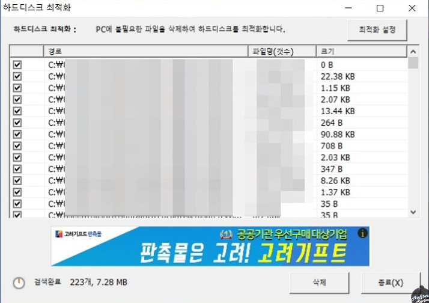
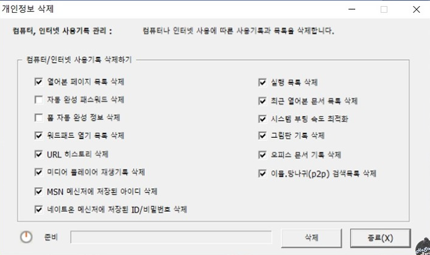
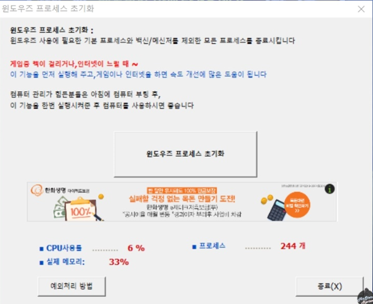
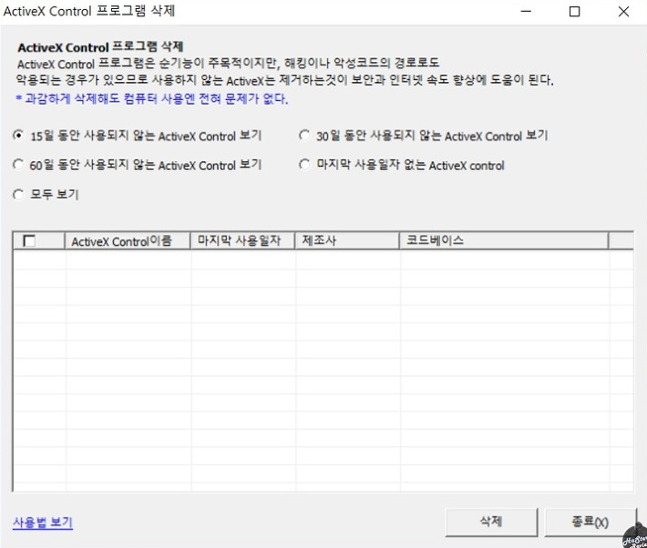

컴퓨터 속도가 느려졌을 때
[GoClean 프로그램]
컴퓨터 속도가 느려졌을 떄 해결 방법은 하드디스크 최적화, 액티브 삭제, 포맷 등이 있습니다
그 중에서 제가 소개할 방법은 최적화와 데이터 삭제를 도와주는 프로그램 사용인데요.
많은 프로그램 중에서도 가장 유명한 GoClean을 소개하겠습니다.

(GoClean 시작화면 입니다.)
많은 기능중에서 하드디스크 최적화와 인터넷 속도를 향상시키는 법을 소개하겠습니다.

(하드디스크 최적화)
직접적으로 하드디스크를 최적화 하는 기능입니다.
쌓여있는 불필요한 파일들을 삭제해줍니다.

(개인정보 삭제)
개인정보 삭제의 경우 인터넷 사용기록 지우기와 비슷합니다.
열어본 페이지 목록, 자동완성, 캐시 삭제 등을 할 수 있습니다.
뿐만 아니라 시스템 부티 속도 최적화 또한 여기서 가능합니다.

(윈도우 프로세스 초기화)
이 기능은 매우 유용합니다.
윈도우를 사용 할 떄 꼭 필요한 것을 제외하고 모두 제거하는 프로세스 삭제 기능입니다.
게임중 렉이 걸리거나 인터넷이 느릴떄 한 번씩 해주면 좋습니다.

(ActiveX Control 프로그램 삭제)
사용하지 않는 ActiveX를 제거할 수 있는 기능입니다.
여러분의 컴퓨터에 불필요한 프로그램이 설치되어 있을 수 있으니 여기서 확인하고 지워주시면 됩니다.
이런 프로그램보다 중요한 것은 평소에 관리를 잘하고
바이러스 검사를 자주받아 사전에 제거하는 것이 중요합니다
감사합니다